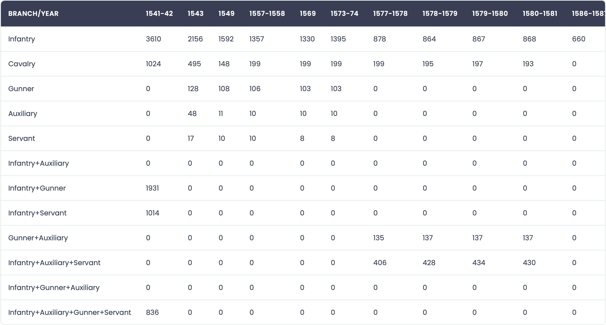
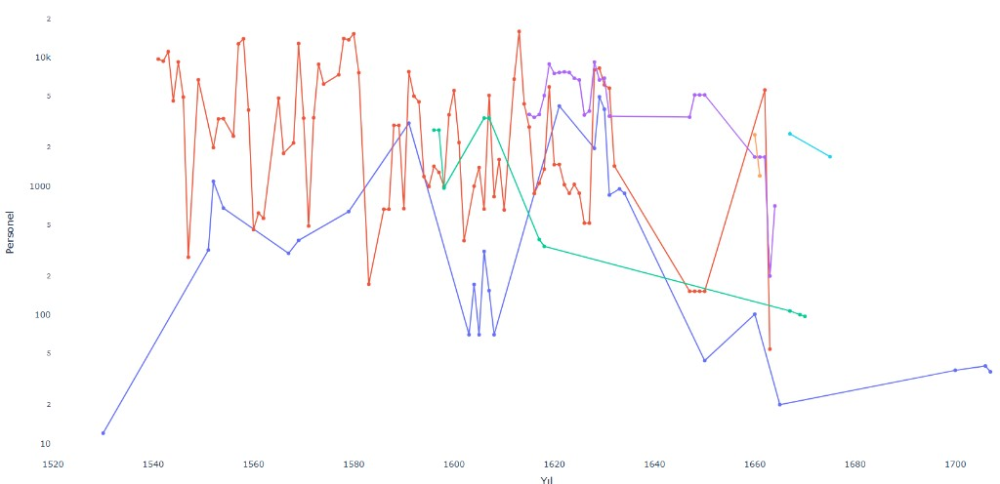
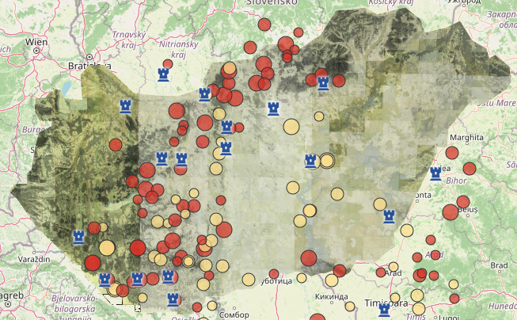

Browse garrison personnel records and historical datasets in a searchable table format.

Explore changes over time through garrison personnel data and interactive charts.

Explore the geographical distribution of Ottoman garrisons along the Middle and Lower Danube.
Kapsamlı veri analizi ve görselleştirme